Clean anchors
= long-range state
Towards Vision-Centric World Models
Postdoctoral Researcher · Meta, London
Inpainting
Editing
Vision-language
+8 more
Image generation
Editing
Embodied AI
Vision-language
+2 more
Video generation
Embodied AI
+5 more
What is a world model?
state stpersists
renderot ~ p(o | st)
dynamicsst+1 ~ p(s | st, at)
Language drives the actor.
It does not hold the state.
at
Clip: FlashForward (ours), text-to-video sample
The clock test · a thought experiment
it exists while unseen
same clock, same place,
across views and edits
it keeps moving: time passes
an actor changes it,
and it stays changed
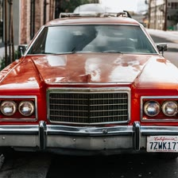
ASUKAInpainting · CVPR’25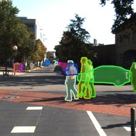
C2F-SegInpainting · ICCV’23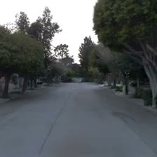
StreetUnveilerInpainting · ICLR’25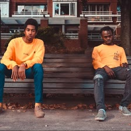
SEELEEditing · TMLR’24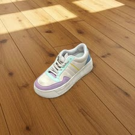
DIRECTEditing · ICML’26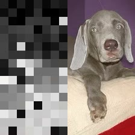
NVGImage generation · ICLR’26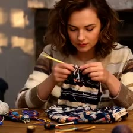
FlashForwardVideo generation · preprint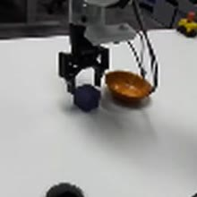
NAVA-WAMEmbodied AI · preprint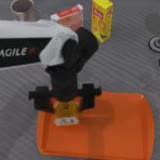
ProWAMEmbodied AI · preprint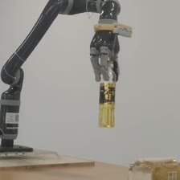
DP4Embodied AI · ICCV’25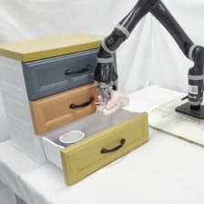
ActiveVLAEmbodied AI · CVPR’26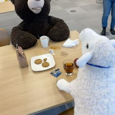
ReasonGrounderVision-language · CVPR’25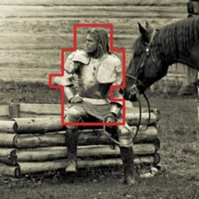
LexVLAVision-language · NeurIPS’24Each work targets mainly one requirement.
Today in depth: NVG · FlashForward · NAVA-WAM · ProWAM
first authorcorresponding author
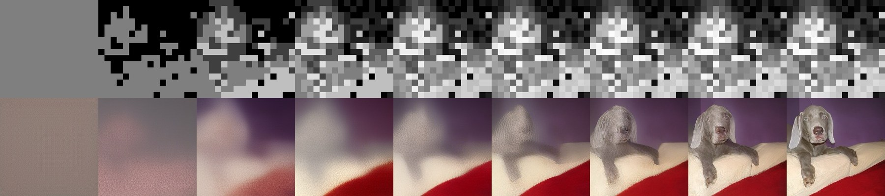
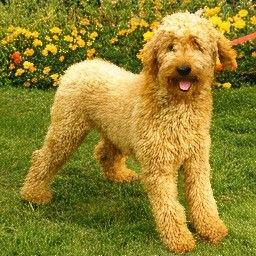
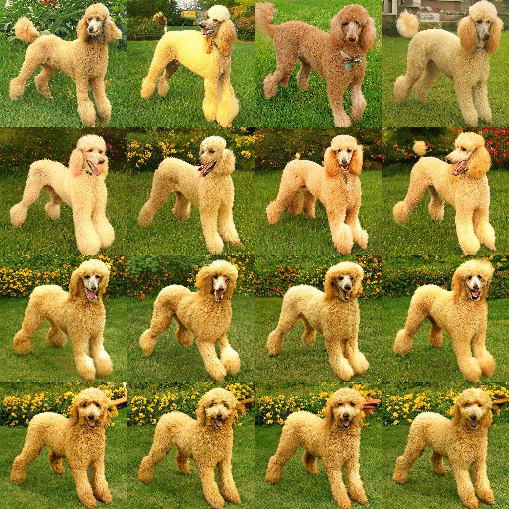
NVG · ICLR 2026 · first author
Denoising path only, mean of 20 videos. Self-Forcing at its fastest (1 GPU): 57.89 s.
Fastest in
all four settingsup to 3.06× vs Self-Forcing
up to 1.68× vs HiAR
FlashForward · preprint 2026 · first author · 65 s videos, 4 GPUs · 14B on GB300, timing only · FlashForward = faster of its two planner settings
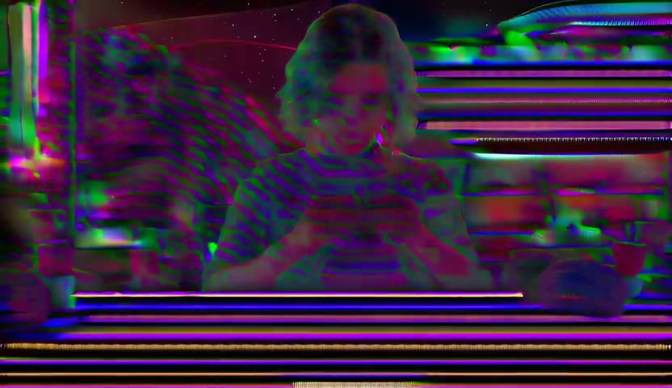
0.8258→0.7806
0.8265→0.8219
0.8404→0.8395
VBench-Long total, 20 s → 65 s · 1.3B · 480p
FlashForward · preprint 2026 · same prompt
FlashForward · preprint 2026
FlashForward · preprint 2026 · 4 GPUs, one denoising stage each
In-flight history only, no anchors (4-step model)
Noisy→ errors pile up
Only looks back→ nothing holds the future
FlashForward · preprint 2026 · ablation sample
= long-range state
sparse · clean
looks both ways
= short-range motion
dense · noisy · free
looks back only
FlashForward · preprint 2026 · one backbone, two roles (planner and renderer)
Next: put an actor in the loop →
FlashForward · preprint 2026 · timings: 1.3B · 480p
Act · dynamics from video
NAVA-WAM · preprint 2026
Act · motion transfer
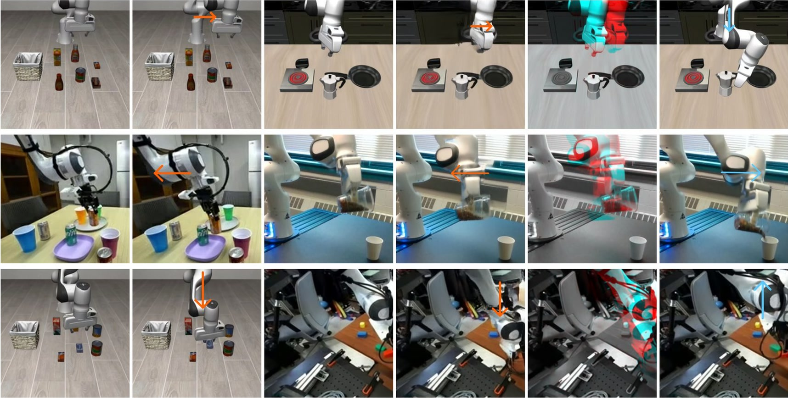
linear read-out of actions, R²: 0.329 vs 0.203 best baseline
NAVA-WAM · preprint 2026
Act · label efficiency
RoboTwin success, % · by labelled demos per task
NAVA-WAM · preprint 2026
Act · real robot
move the cube to the left side of the bowl
4/5
all 3 tasks: 14/15
0/5
all 3 tasks: 10/15
0/5
all 3 tasks: 8/15
per call, one H100: 379.2 ms vs 3,523.9 ms DreamZero
NAVA-WAM · preprint 2026
Act · plan in pixels
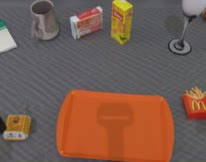
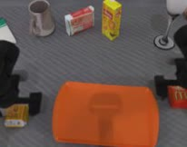
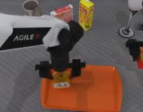
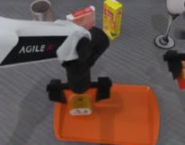
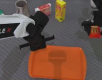
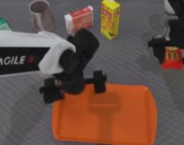
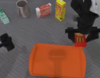
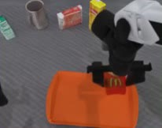
camera frameimagined, one denoising step
RoboTwin, closed loop
ProWAM · preprint 2026
Act · imagination from video
Success under perturbation, %
randomized scenes: no action demos (seen only as action-free video)
Real robot, zero-shot · 4 tasks × 5 trials
ProWAM · preprint 2026
Off-screen evolution
persist + evolve at once:
the clock keeps running while unseen
Each requirement shown on its own; next: all four in one model.
first authorcorresponding author
Language names the task.
Vision holds the world.
Thank you
Backup · language
Backup · the field
Genie 3 · DeepMind, Aug 2025
"visual memory extending as far back as one minute"; real-time 720p, 24 fps
V-JEPA on IntPhys · Garrido et al., Meta FAIR 2025
zero-shot from video-only pre-training; multimodal LLMs only marginally above untrained
pixel-prediction VideoMAEv2: near untrained
Physics-IQ · Motamed et al., Google DeepMind 2025
physical understanding "severely limited, and unrelated to visual realism"
WorldMemBench · Oct 2026 · 260 cases, 9 models
best static-memory model initiates only 31.7% of prescribed events; all 9 weaker at the 3rd return than the 1st (reconstruction metrics)
LiveWorld · HyDRA · 2026
out-of-sight state is "frozen"; hidden subjects become "frozen, distorted, or vanishing"
Genie 3 blog 2025-08-05 · arXiv 2502.11831 · 2501.09038 · 2610.19063 · 2603.07145 · 2603.25716
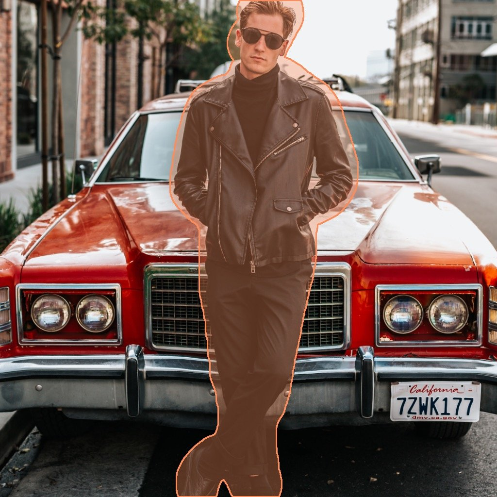
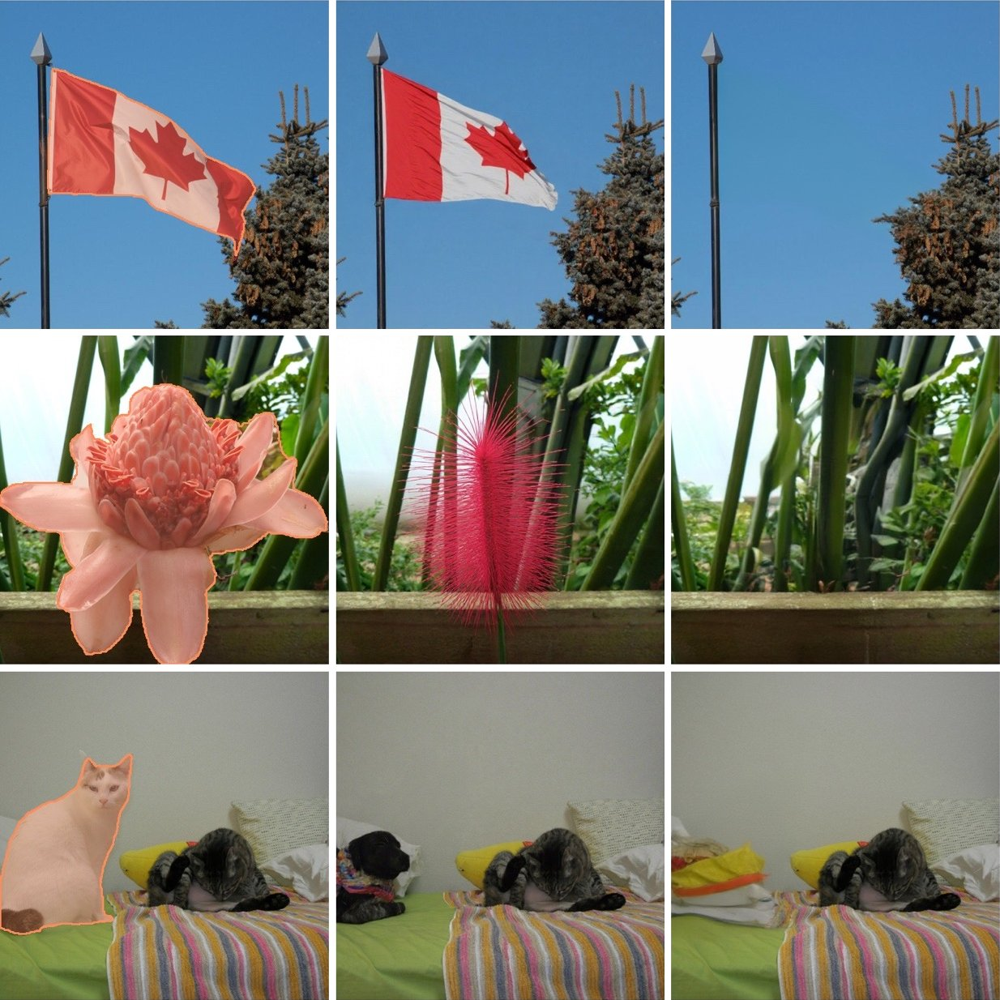
ASUKA · CVPR 2025 Highlight · first author · right: extension on FLUX, preprint 2026
C2F-Seg · ICCV 2023 · co-author · predicted masks on a synthetic test video from MOViD-A, the paper’s video amodal dataset
StreetUnveiler · ICLR 2025 · co-author
SEELE
DIRECT 3.2× speed
LeftRefill
type a prompt… learned task embeddings, 3D handles and views
SEELE · TMLR 2024 (J2C) · first author | DIRECT · ICML 2026 · co-corresponding author | LeftRefill · CVPR 2024 · co-author
median gravity error
Puffin · ICLR 2026 · co-author
Zero123, from its last view→ another object
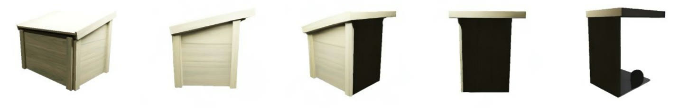
LeftRefill, autoregressive→ the same kennel
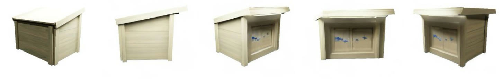
Every step forward is a chance to drift.
LeftRefill · CVPR 2024 · co-author · novel views of an Objaverse object
Act · a 3D world inside the actor
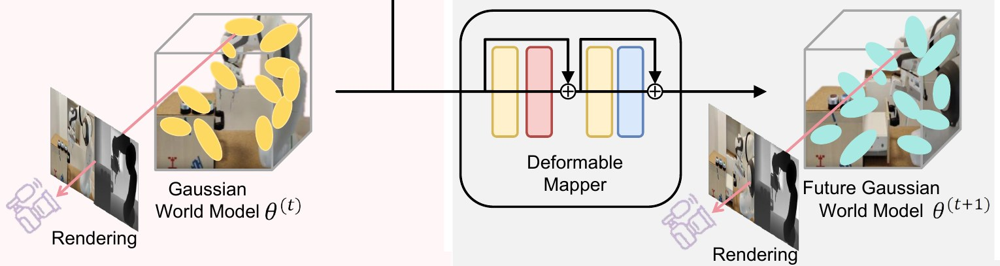
θt + at → θt+1
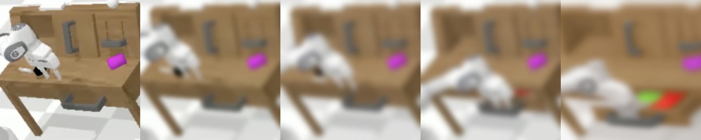
blurry and short-horizon
policy rollouts · cups clip edited in source (jump cut)
simulation
real robot
success-rate points over the strongest baseline in each
DP4 · ICCV 2025 · co-author
Act · choose the view
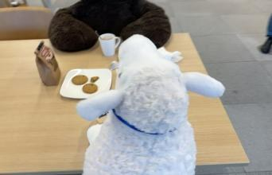
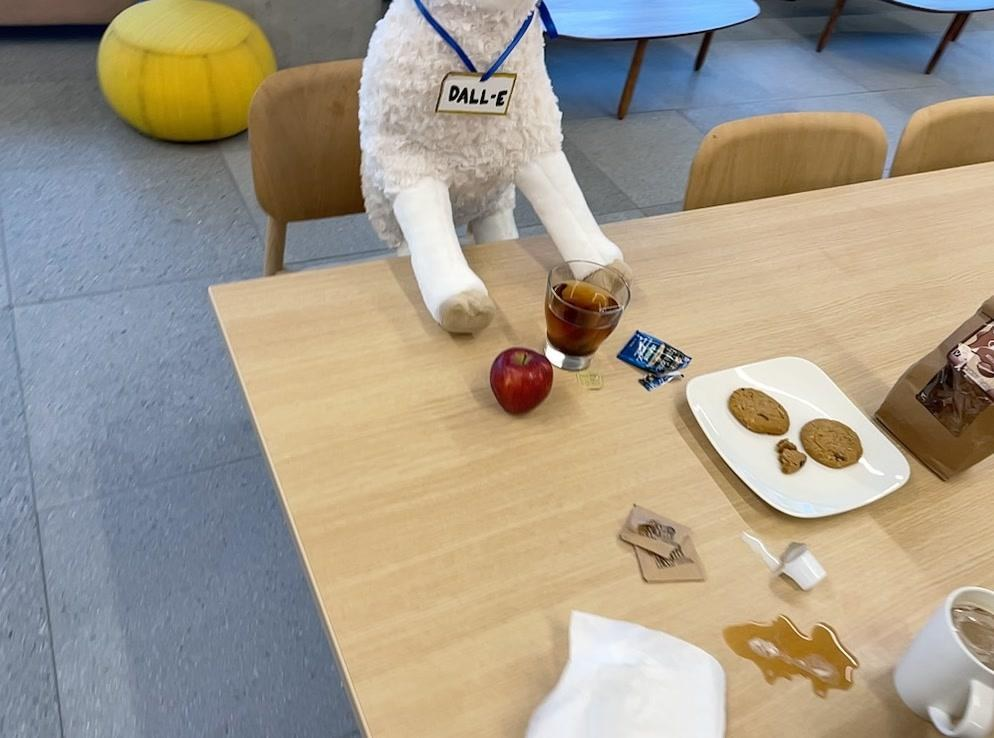
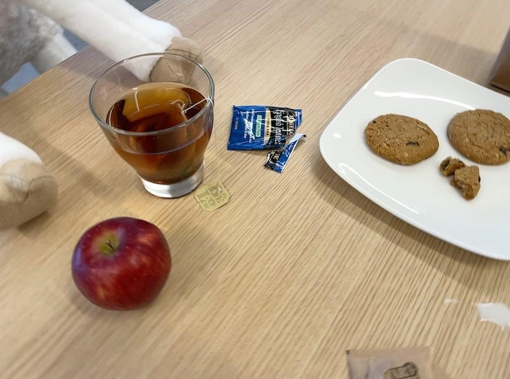
illustration from the paper’s concept figure
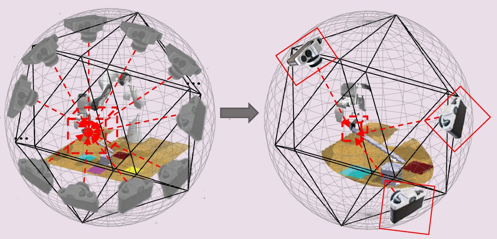
re-renders of the observed point cloud: no camera moves
92% vs 77% RVT-2
95% vs 63% RVT-2
ActiveVLA · CVPR 2026 · co-author
Language asks
“Find the red, round, sweet fruit behind the toy sheep.”
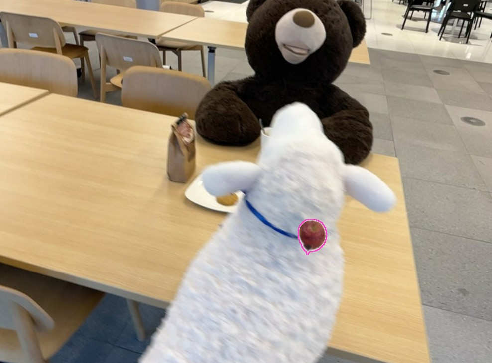
ReasonGrounder · CVPR 2025 · co-author
Language reads out
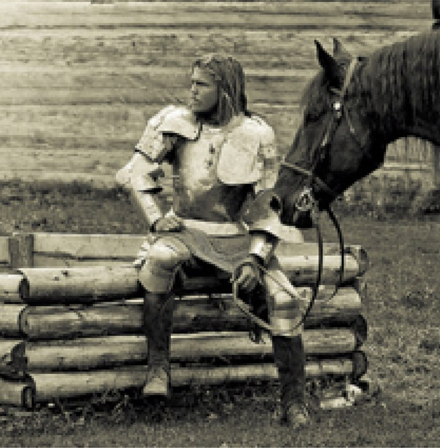
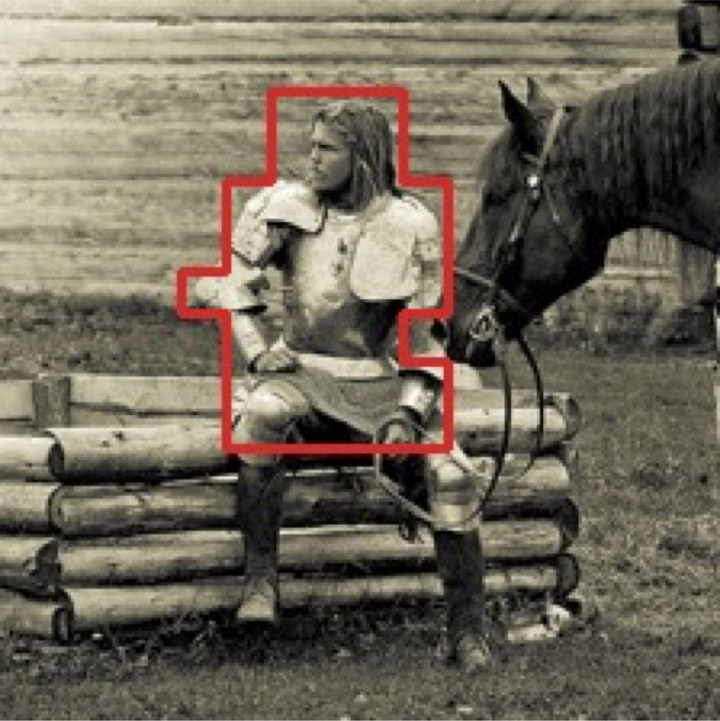
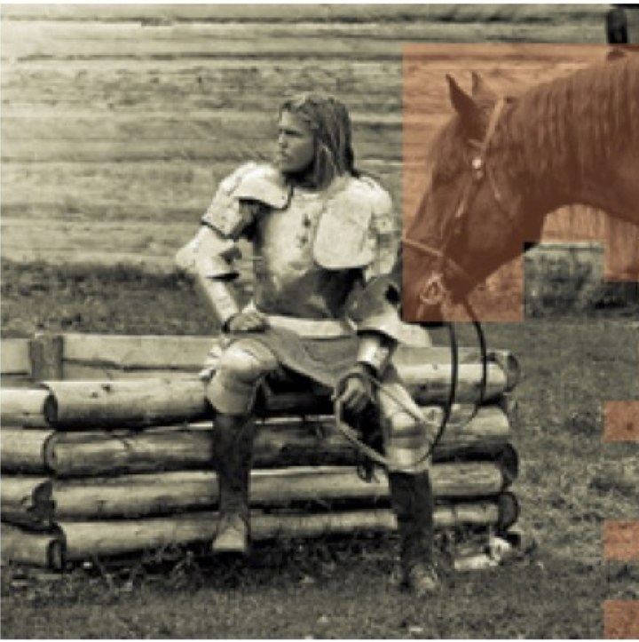
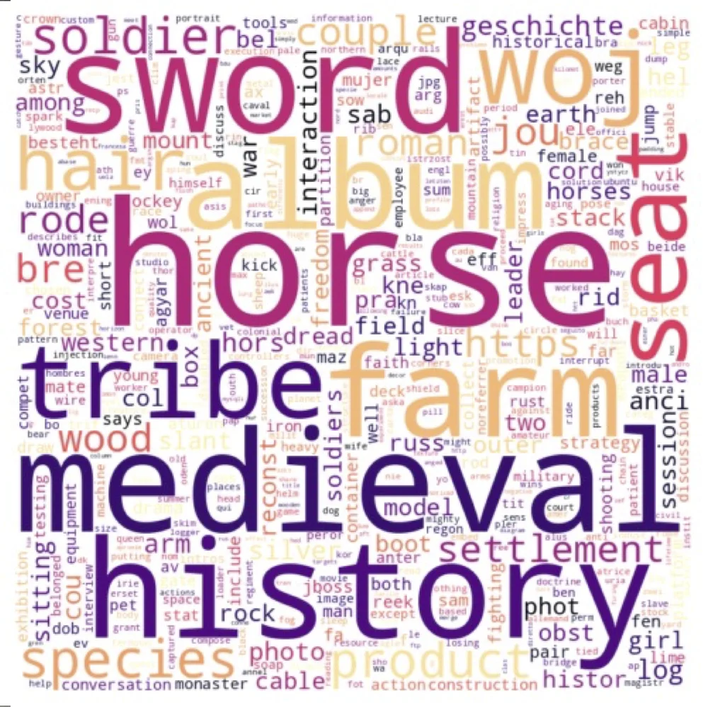
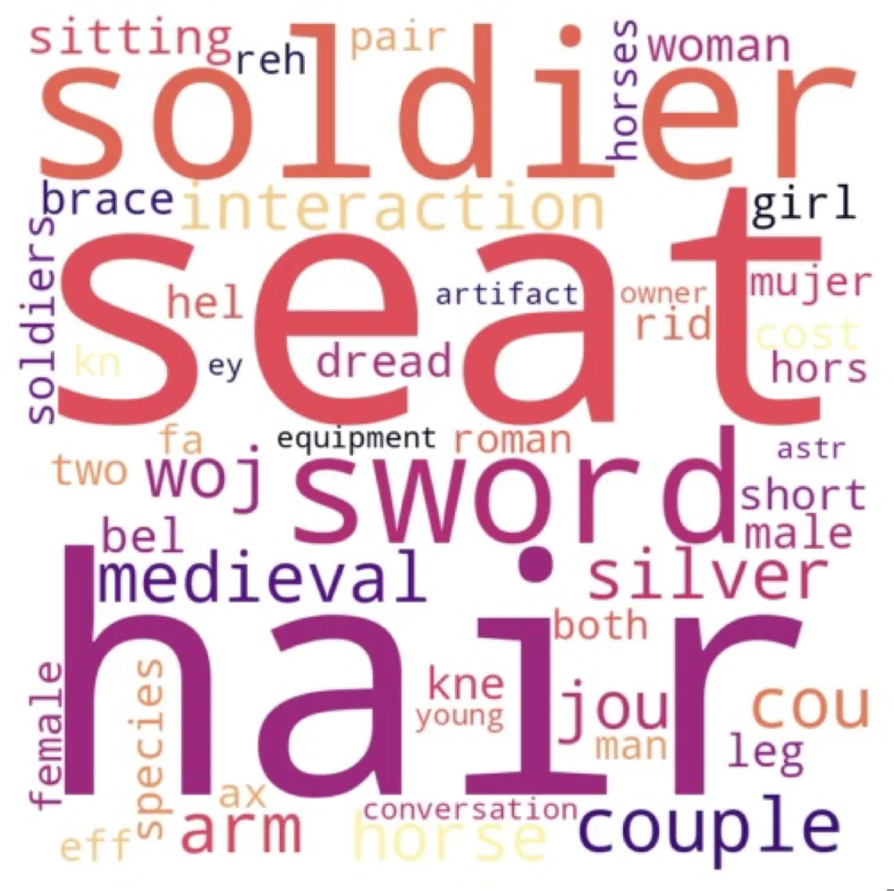
raw top tokens · the vocabulary is noisy
word → patch grounding · PatchDis mIoU · same framework
LexVLA · NeurIPS 2024 · corresponding author